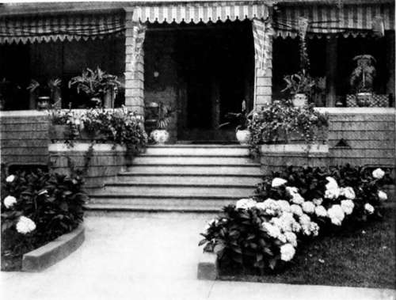
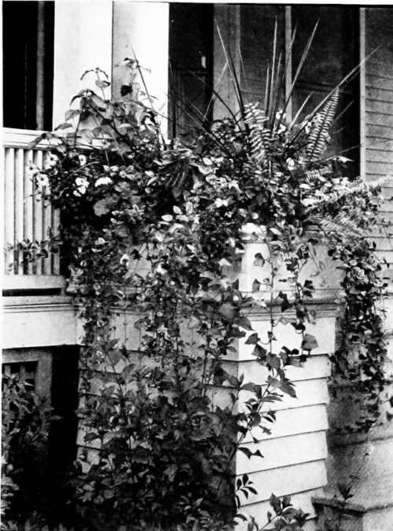
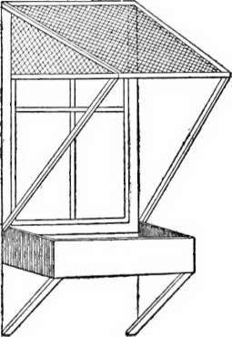

XX. Window And Veranda Boxes
Description
This section is from the book "Indoor Gardening", by Eben E. Rexford. Also available from Amazon: Indoor Gardening.
XX. Window And Veranda Boxes
THE window-box was at first designed to serve as a substitute, on a small scale, for the garden which many flower-loving women of the cities can not have. But the time has gone by for such narrow limitations of it. Nowadays the owner of a garden is not satisfied with flowers in the open ground. She must have them at the windows of her room, where they can be enjoyed at all times. The window-box has become a necessity. We see it everywhere. And quite often we see it in its most attractive form at the window of the humble home, while that at the window of the stately residence across the way lacks the beauty which is the result of good care and loving attention. For, the window-box, like the garden, will not take care of itself. Neglect it, leave the care of it to others who take little or no interest in it, and it will soon become an eyesore, rather than the "thing of beauty" which it can be made by proper management. Only those who love flowers well enough to be willing to give them personal attention should attempt the culture of them. Those who set out to have them because "it's the style," almost invariably fail of success with them, as they deserve to. Grow flowers because you love them, or do not grow them at all.
An Attractive Pouch.
The fact remains, however, that many women who really love flowers fail to achieve success in window-box gardening. Sometimes failure is the result of an unwise selection of plants. But oftenest it comes from a lack of proper knowledge as to the conditions which prevail in this phase of gardening-conditions easily overcome when once clearly understood.
Because of the exposure of the window-box on all sides, moisture evaporates very rapidly from the soil in it. Those who are used to caring for plants grown in pots on the window-sill, are under the impression that a large application is not necessary for those in the box, therefore water is applied in limited quantity, and the result is that the soil on the surface seems moist enough, while examination would show that two or three inches below the surface it is really dry. In such a soil the roots of the plants can not flourish, and, as a natural consequence, failure, either complete or comparative, results. The misleading appearance of the surface-soil is the rock upon which nine out of ten window-box gardeners find shipwreck. When they give the matter careful consideration, and understand that it takes a good deal of water to thoroughly saturate all the soil contained in a box a foot wide and a foot deep, and as long as the window is wide, then they will understand the whys and wherefores of their failure. The fact is, every such box should be given at least a pailful of water daily, while nearly all get only a quart or two. You must keep all the soil moist, at all times, if you expect your plants to develop roots in it. Keep this in mind, and water accordingly, and there is no reason why just as healthy plants cannot be grown in a window-box as in the garden beds. To sum up- liberal watering is the secret of successful window-box gardening.
Not all plants are adapted to this phase of gardening. What is wanted is something that develops rapidly. If it is a flowering plant, it must be a profuse and constant bloomer. Many of our annuals are excellent for this purpose. The Petunia blooms freely, and throughout the entire season, if prevented from perfecting seed. Its flowers are rich in color, and its habit is all that can be desired, for it combines the characteristics of a standard plant with those of the vine. Planted at the edge of the box, it will soon droop and cover the sides of it, while the branches above will lift their flowers on stalks that seemingly never thought of drooping. The Nasturtium is another most excellent plant for window-box culture, provided the soil in which it is planted is only moderately rich. In a very rich soil this plant will make a rampant growth of branches, but there will be but few flowers. The Nasturtium, like the Petunia, has the combined merits of both upright and drooping habit.
The Fuchsia does wonderfully well in the window-box if not exposed to strong sunshine. An eastern exposure suits it best. The Geranium is a prime favorite. A combination of pink varieties with pale lavender Ageratum will be found very pleasing. For north windows Pansies will afford much pleasure. Heliotrope will make a most luxuriant growth in a sunny window. Blue Lobelia, white Candytuft, and Sweet Alyssum, are excellent to plant at the edge of the box, to droop. The best vines for this purpose are Tradescantia, German Ivy, Moneywort, Lysimachia, and Glechoma, all rapid growers.
Boxes filled with Coleus of contrasting colors are very attractive. When scarlet and yellow sorts are used, the effect will be as brilliant as that of many flowers. Scarlet Coleus, combined with the rich yellow Pyrethrum, "Golden Feather," is very effective. Gray Centaurea, better known as "Dusty Miller," can be used with Coleus or Pyrethrum, with charming results. Because of its spreading habit, it should be given a place at the edge of the box. The Coleus, being of upright habit, should occupy the center.
I last season saw a window-box filled with scarlet Salvia and the trailing Abutilon Eclipse. This Abutilon is of such slender habit that it is almost a vine, and it is most effective when given a chance to droop. Its foliage is of a rich green, blotched, spotted, and marbled with bright yellow. The sides of the box were completely hidden by it. In striking contrast with its green-and-gold variegation were the scarlet spikes of the Salvia above. Such a combination can be made extremely effective, with but little expense.
Porch Box.
For sunless windows, such Ferns as the good old Boston and the feathery-fronded Whitmani will be found very satisfactory. The German Ivy can be used to droop over the sides of such a box, being equally at home in shade or sunshine.
Cannas, Dracenas, and other plants with striking or peculiar foliage can be used very effectively in window-box combinations. In fact, there are so many plants that can be grown in these boxes that all tastes can be satisfied.
It must be kept in mind that the large number of plants in these boxes will speedily exhaust the supply of nutriment in the soil. To keep them growing well throughout the season, it will be necessary to give frequent applications of some good fertilizer. Do not use enough to bring about a very rapid growth, for rapidity means weakness, as a general thing. Aim to secure a vigorous, healthy development, and be satisfied with that. If any branches seem to have exhausted themselves, remove them promptly. Allow no seed to form. Shower the plants well at night. It is well to apply water at night, for, if given in the morning the heat of the sun will help bring about a too rapid evaporation.
Window-boxes must be given very substantial support, because the amount of soil one of ordinary size contains will have great weight when wet. Not only should they be fastened firmly to the sill of the window, but they should be given additional security by bracing them well below.
Veranda-boxes are simply evolutions of the window-box idea. By the use of them, a veranda lacking the charm of vines can be made extremely attractive. Larger boxes can be used than at windows, and more plants can therefore be grown in them. Nowadays we often see second-story verandas and balconies completely screened in by vines grown in boxes standing on the floor, and the effect is very pleasing; especially so, from the room off which such a veranda opens, for it gives the impression of having transplanted a bit of the garden to the upper story, where it can be enjoyed at one's leisure. For screening-in a veranda, the Madeira Vine is a most excellent plant, being of very rapid growth, and having large, thick foliage. It can be trained on strings, or over woven-wire netting.
Plants in vases require about the same treatment as those in window-boxes. Because of their exposure, evaporation is always rapid, and therefore especial care must be taken to see that they are always well supplied with water.
To my mind, flowers at the sill only half carry out the possibilities of a window decoration. To the window-box I would add a framework for the upper part of the window over which vines could be trained in such a manner as to result in an awning, in which foliage and flowers take the place of unsightly canvas. This idea I have worked out to my own satisfaction, and for several years past my windows have been as attractive above as below. The framework of such an awning any one can easily make from strips of lath. Cover it with coarse-meshed wire netting. Fasten it to the top of the window, and support it with strips of wood, as shown in the accompanying diagram. Plant vines at the ends of the box, and train them up to the framework by strings. In a very short time they will cover it so thickly as to give all the shade needed, and the effect will be so pleasing that you will wonder how you were ever satisfied with such a hideous thing as the ordinary awning of gaudily-striped canvas. The annual Morning-Glory will be found a most excellent vine for this purpose. The only fault to find with it is its too luxuriant growth, which will make it necessary for you to cut away a good many of its branches.

Continue to: